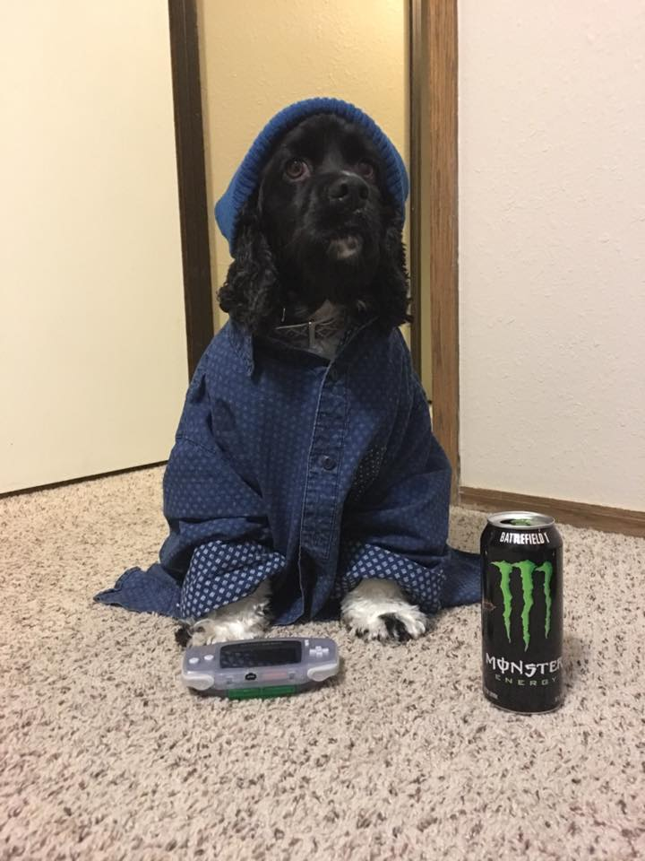

Here's a little bit about me:
After 25 years in the same city I packed up my belongings and moved to the greatest city in the world, New York City.
I enjoy doing yoga inversions, finding new places to eat and enjoying the outdoors.
Beyond all of that I am a proud to be called wife, aunt, sister and dog mom to the best Cocker Spaniel named Leah.
I’m happiest surrounded by the ones I love most, on the road and creating new memories.
